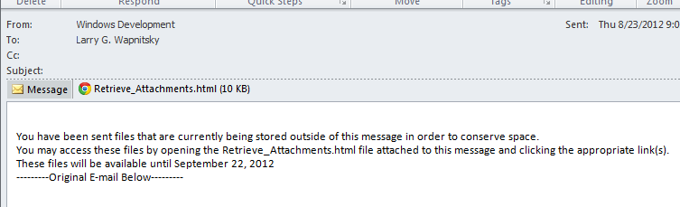

While wonderfully convenient, receiving files from clients and consultants through email has its drawbacks.
First there’s the mailbox bloat. One 8MB email and wham!, your mailbox is full and you can’t send. Then there’s the PST file size limit to contend with. And if you need bigger files? Forgetaboutit! FTP? SendIT? There are ways around using email to receive files but the best of them aren’t half as simple. Can’t we just….? Now, we can!
Introducing the Email Attachment Removal/Retrieval System (EARS). Email attachment magic – automatically. Now, if someone outside the office sends you an email that exceeds a set threshold in size (currently 8MB), instead of being rejected, the message is passed to the Email Attachment Removal/Retrieval System. EARS saves any attachments larger than 160K to a temporary storage location, removes them from the email message and creates a new attachment named ‘Retrieve_Attachments.html’ before passing it on to your mailbox. The result is that you receive a nice small email with links to the original attachments that you can download and save to the location of your choice. You can even retrieve the attachments using your iPhone/iPad [1] or Outlook Web Access!
Incoming Email attachment size is no longer limited by WRT, only by the sender’s email system.
Here’s what it looks like:
Notice the subject line has been appended with “[Attachments Processed]”. This tells you that the message was passed to the EARS system and attachments have been saved and removed. Also notice the ‘Retrieve_Attachments.html’ attachment – this is where you get your files back when you open it.
Open the ‘Retrieve_Attachments.html’ by double-clicking in Outlook and the page will open in your browser. Use the links to save your files to the location of your choice. But do it right away because the files will be deleted permanently (and un-retrievably) from the temporary location 30 days after the message was received whether you’ve saved them or not!
EARS was conceived of by your IT team in response to direct feedback from you and was created by our one and only Larry Wapnitsky using FREE open-source software. No dollars were harmed during its development.
| [1] | iPhone/iPad compatibility is limited to files that are readable on your device based on installed apps. |